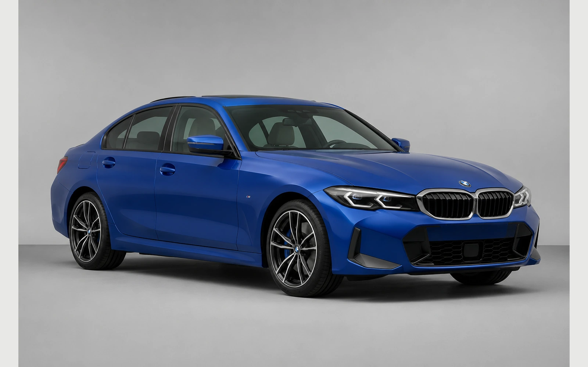
BMW 3 Series2025-2026 / G20 LCIapproved
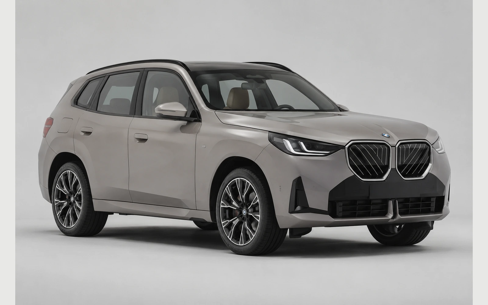
BMW X32025-2026 / G45needs-reviewLower central bumper insert is unusually simplified and does not confidently match the production G45 trim detail.
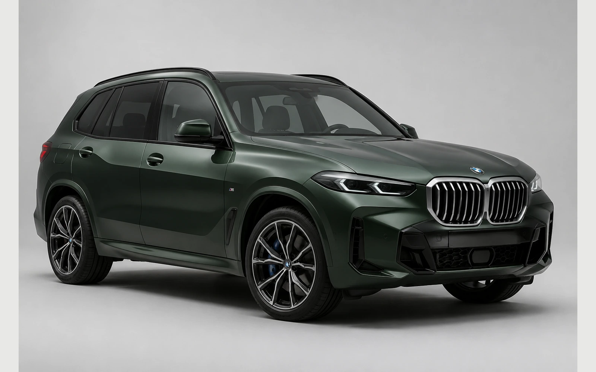
BMW X52025-2026 / G05 LCIapproved
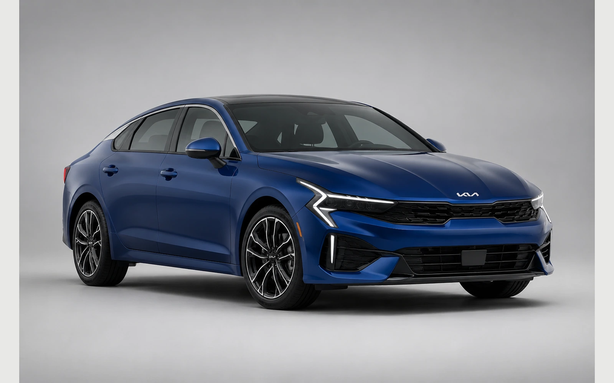
Kia K52025-2026 / DL3 faceliftapproved
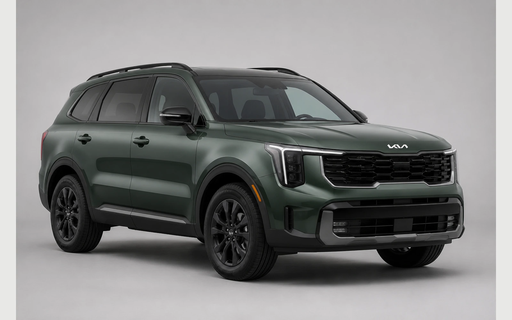
Kia Sorento2025-2026 / MQ4 faceliftapproved
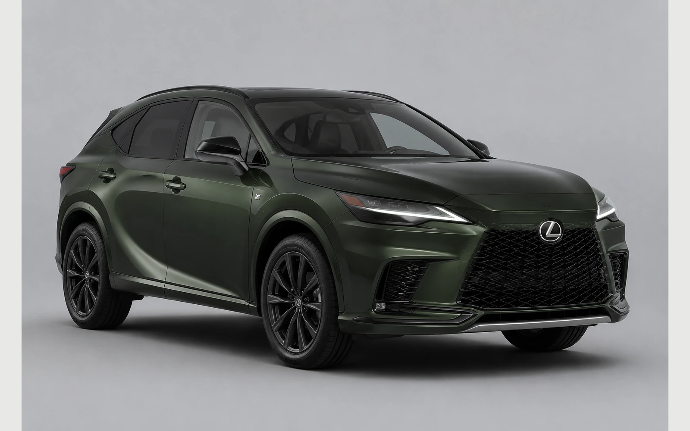
Lexus RX2025-2026 / ALH10approved
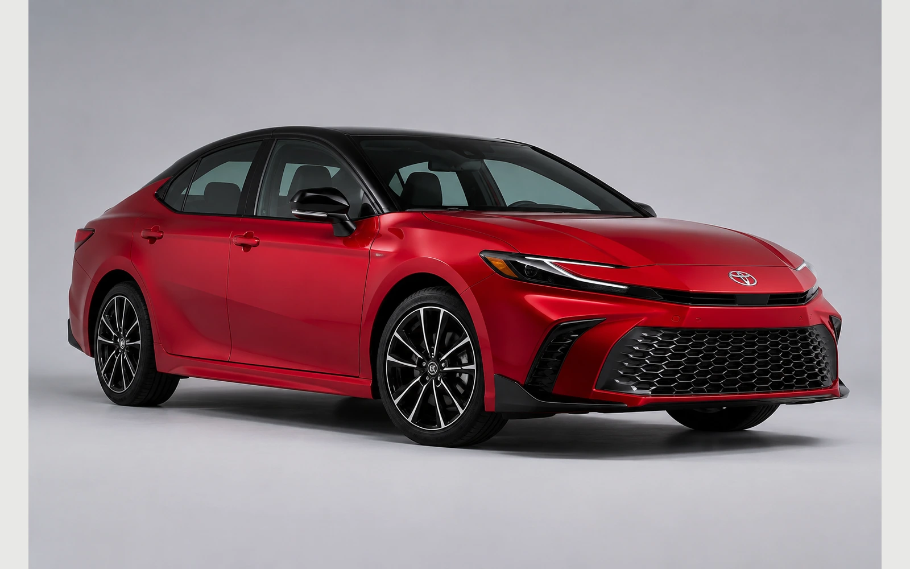
Toyota Camry2025-2026 / XV80approved
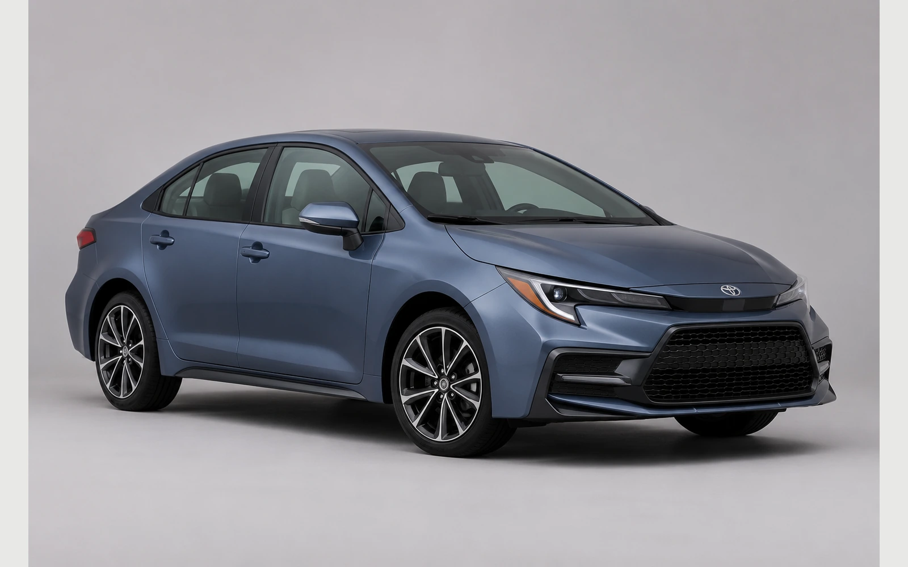
Toyota Corolla2025-2026 / E210approved
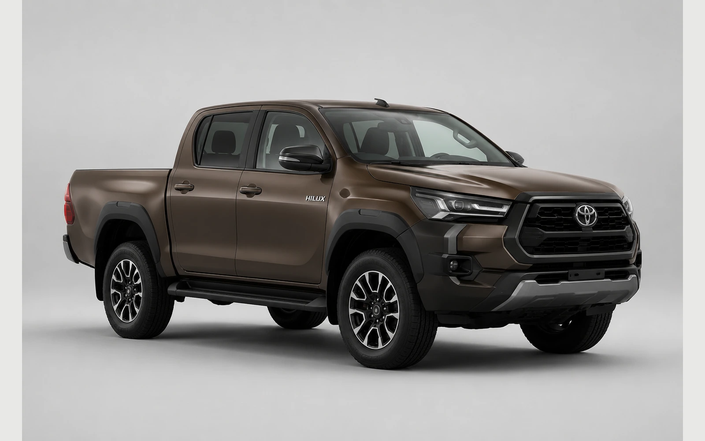
Toyota Hilux2025-2026 / AN120/AN130approved
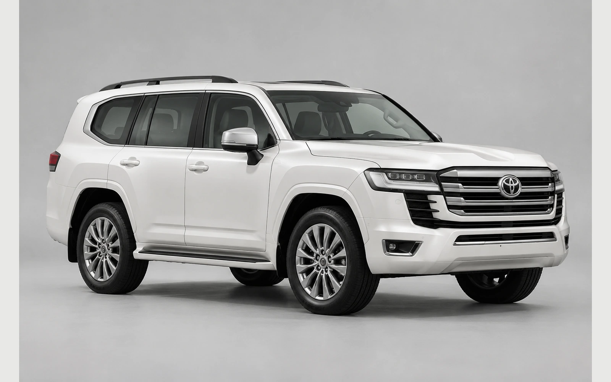
Toyota Land Cruiser 3002025-2026 / J300approved
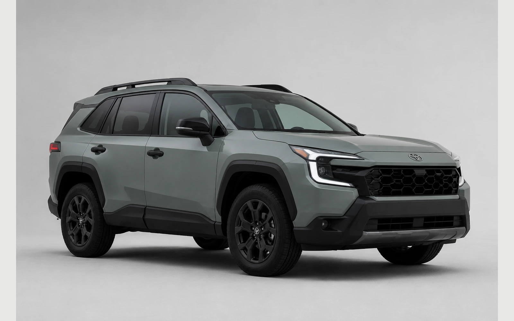
Toyota RAV42026 / 2026 sixth-generation production bodyapproved
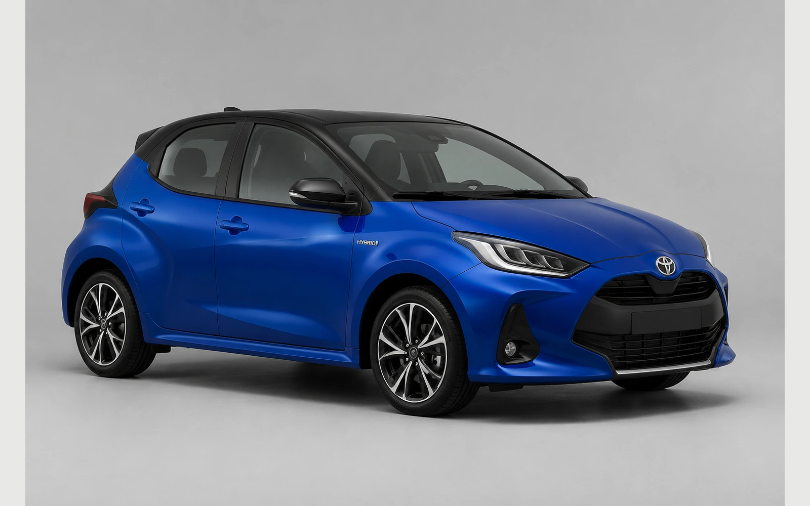
Toyota Yaris2025 / XP210approved